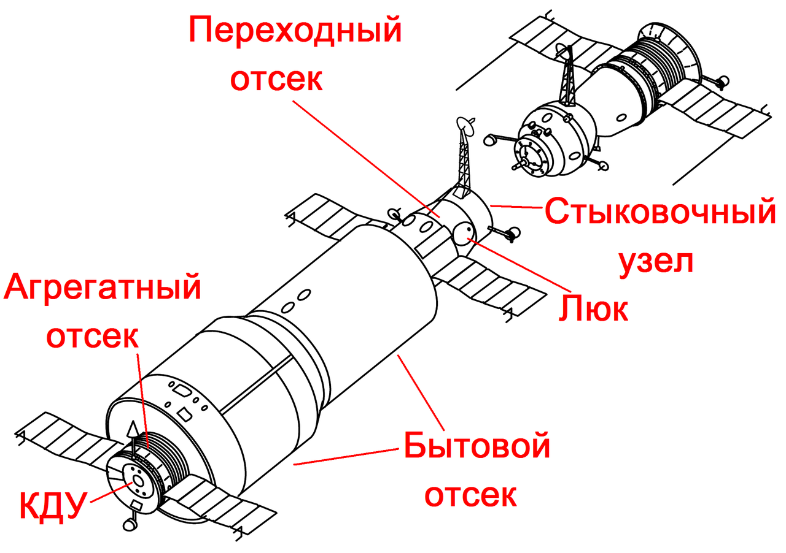

Орбитальные станции

Орбитальная станция (ОС) — космический аппарат, предназначенный для долговременного пребывания людей на околопланетной орбите с целью проведения научных исследований в условиях космического пространства, разведки, наблюдений за поверхностью и атмосферой планеты, астрономических наблюдений и тому подобное.
От пилотируемого космического корабля космическая станция отличается наличием экипажа, периодически сменяемого с помощью транспортных кораблей, доставляющих на ОС сменный экипаж, запасы топлива и материалов для функционирования технических систем станции, средства жизнеобеспечения экипажа, личную корреспонденцию его членов, запасные части для ремонта и модернизации самой станции, блоки оборудования для расширения её функций, материалы для проведения новых исследований и тому подобное. Спускаемый аппарат транспортного корабля доставляет на Землю сменённых членов экипажа и результаты проведённых исследований и наблюдений.